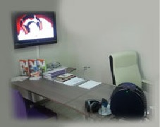
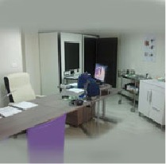
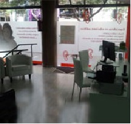

Es el primer contacto con el paciente. Se recogen sus datos personales y sobre todo se le pregunta por cuestiones sobre su entorno de vida (trabajo, vida social, familia…) y sobre el conocimento de su problema (problema actual,síntomas, antecedentes).

Exploración del oído por imagen
Realizamos la exploración de su conducto auditivo para ver con mas detalle el tímpano y lesiones del oído si las hubiere. Mediante Video-otoscopio, al mismo tiempo que el Audioprotesista está realizando la exploración de su oído, usted podrá ver la imagen en un monitor y permitirá una mejor explicación de posibles tapones, lesiones…

Prueba de Audiometría en cabina insonorizada
Para realizar esta prueba el paciente debe situarse en el interior de una Cabina Insonorizada para que la prueba se desarrolle en silencio. Las pruebas que se hacen son:
Audiometría Tonal Aérea: Mediante un Audiómetro se emite una serie de tonos a una intensidad y frecuencia determinada a través de unos auriculares que se le colocan al paciente.

Plan Personal Revisión Anual Gratuita
Seguimiento personalizado de la adaptación durante UN AÑO:
• 1ª Revisión a los 15 días de la adaptación.
•2ª Revisión al mes de la adaptación.
•3ª Revisión entre 3 y 6 meses de la adaptación.
•4ª Revisión al año de la adaptación.